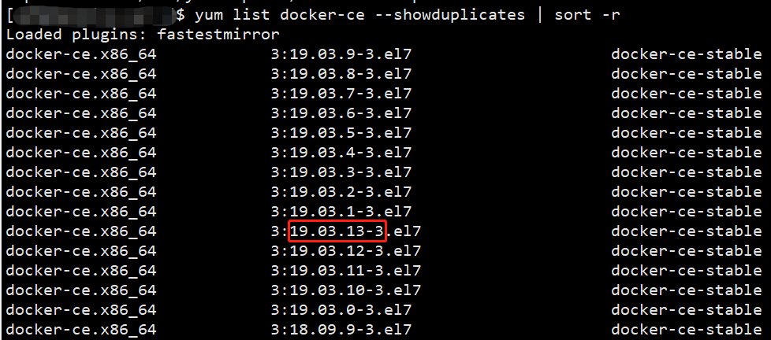
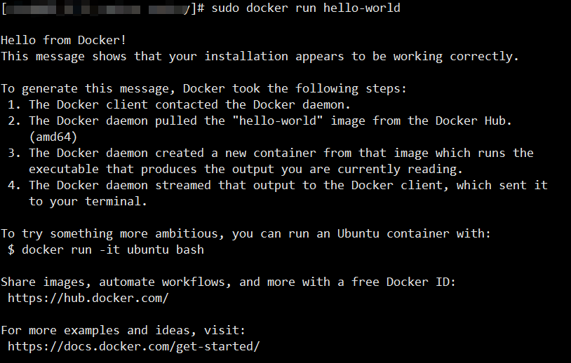
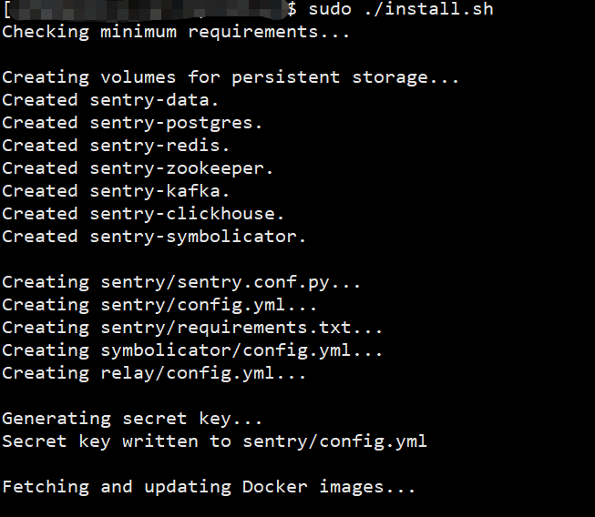
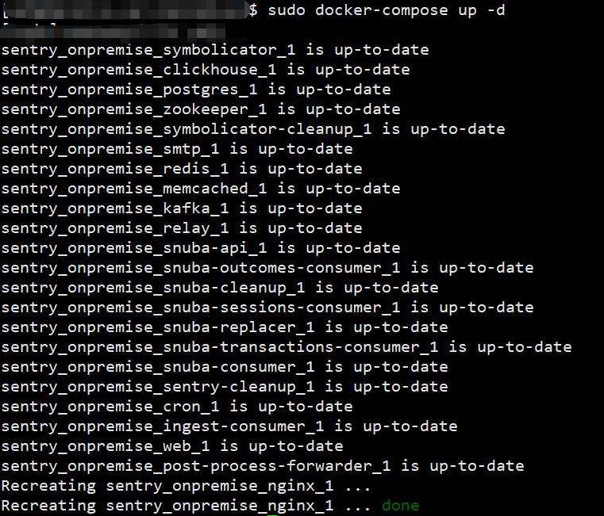

sentry部署前端监控系统
Sentry 是一个开源的实时错误监控的项目，它支持很多端的配置，包括 web 前端、服务器端、移动端及其游戏端。支持各种语言，例如 python、oc、java、node、javascript 等。也可以应用到各种不同的框架上面，如前端框架中的vue 、angular 、react 等最流行的前端框架中。最最最重要的是，他是提供收费服务的同时，也提供开源的版本。本文我们从零开始安装配置一套sentry项目。
安装
sentry官网提供两种安装方式，docker与python, 我们的主要目的是使用，安装尽量简单化，所以，选择了docker方式进行安装
安装docker
本次演示服务器是centos7的阿里云，首先安装docker
安装依赖包
sudo yum install -y yum-utils device-mapper-persistent-data lvm2设置镜像（清华大学，也可使用阿里云的）
sudo yum-config-manager --add-repo https://mirrors.tuna.tsinghua.edu.cn/docker-ce/linux/centos/docker-ce.repo可以查看所有仓库中所有docker版本，并选择特定版本安装
yum list docker-ce --showduplicates | sort -r
安装docker
sudo yum install docker-ce-19.03.13 #由于repo中默认只开启stable仓库，故这里安装的是最新稳定版19.03.13启动docker
sudo systemctl enable docker # 开机自启 sudo systemctl start docker # 启动docker服务
测试docker
sudo docker run hello-world # 拉取hello-world 镜像

至此，docker安装成功~
安装docker-compose
docker安装完毕后，需要安装docker-compose(macos 貌似docker安装完就自带了docker-compose，未确认)
Docker Compose是一个用来定义和运行复杂应用的Docker工具。一个使用Docker容器的应用，通常由多个容器组成。使用Docker Compose不再需要使用shell脚本来启动容器。
docker-compose的安装也有两种方式：pip(python的包管理工具)与二进制。本文我选用二进制文件进行安装：
拉取二进制源码：
sudo curl -L https://github.com/docker/compose/releases/download/1.27.4/docker-compose-`uname -s`-`uname -m` -o /usr/local/bin/docker-compose # uname -s 类似ES6中的模板字符串写法添加可执行权限
sudo chmod +x /usr/local/bin/docker-compose添加软连接
sudo ln -s /usr/local/bin/docker-compose /usr/bin/docker-compose测试docker-compose
docker-compose --version # 返回 docker-compose version 1.27.4, build 40524192
安装sentry
拉取sentry源码
git clone https://github.com/getsentry/onpremise.git执行安装shell文件
cd onpremise sudo ./install.sh
这个过程会特别久（持续了差不多60分钟~），中间会提示你创建账户与密码

安装完毕后，通过docker-compose启用sentry:
sudo docker-compose up -d
服务启用成功后界面：

访问
服务默认开启9000端口，可以通过修改onpremise/.env文件中的端口号来修改配置：
SENTRY_BIND=9100 # 修改为9100
另外config.yml与sentry/sentry.conf.py也都有9000的值，最好一并都修改了
配置
因为Sentry整个服务比较占用内存，导致机器内存只剩下170M左右，且访问直接502，为了不影响其他服务，暂时搁浅项目，后续继续研究。配置部分后续有机会再补上，可参照Sentry 入门实战
其他命令
停止sentry服务及重新打包升级配置
docker-compose stop # 停止
docker-compose build # 重新build
docker-compose run --rm web upgrade # 升级配置
docker-compose up -d
查看端口占用
sudo netstat -tanlp # 所有tcp端口
sudo netstat -tunlp | grep 9100 # 指定端口
停止docker
sudo systemctl stop docker